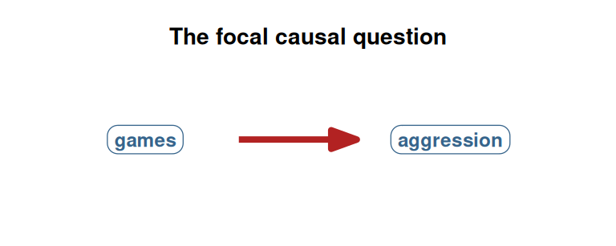
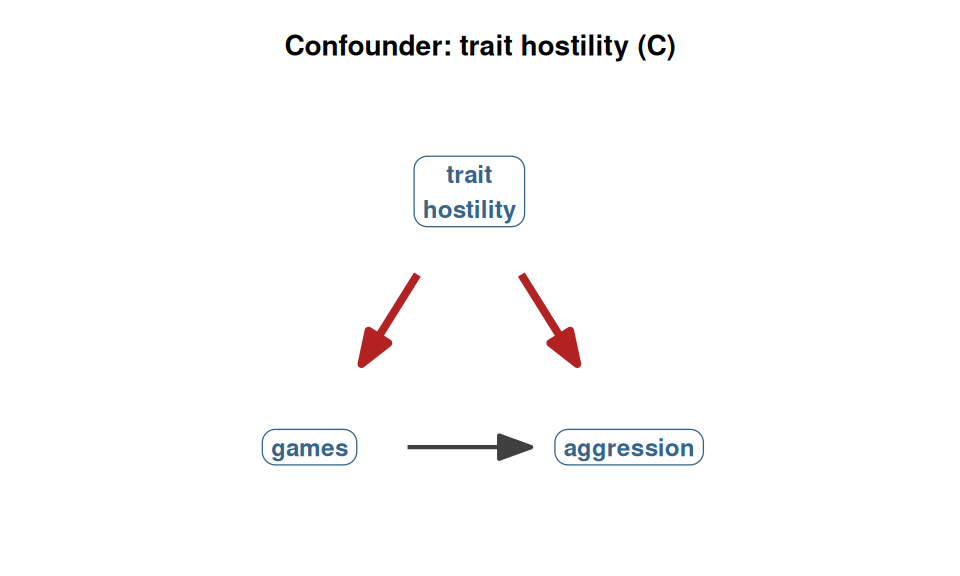
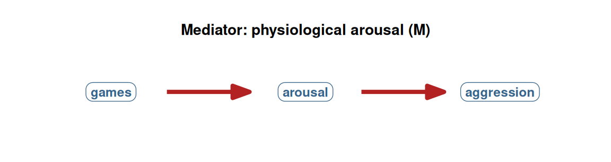
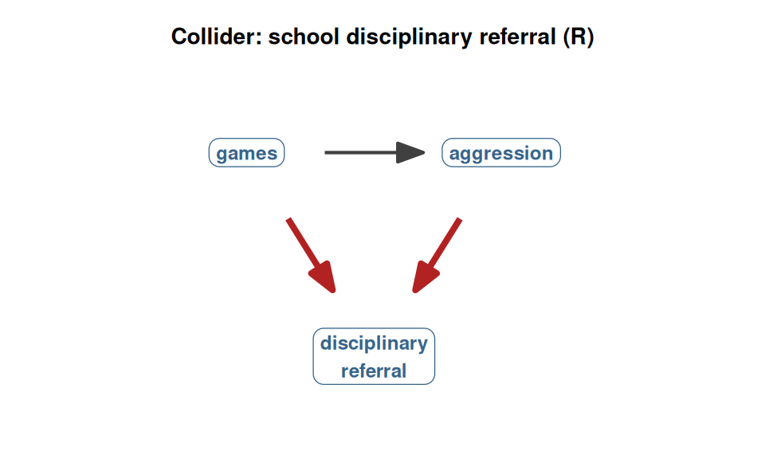
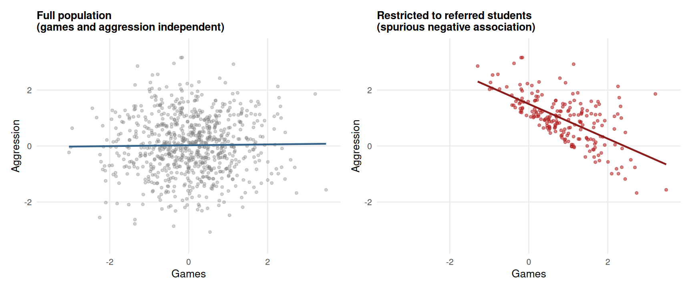
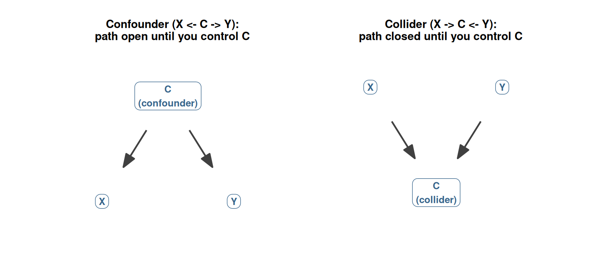
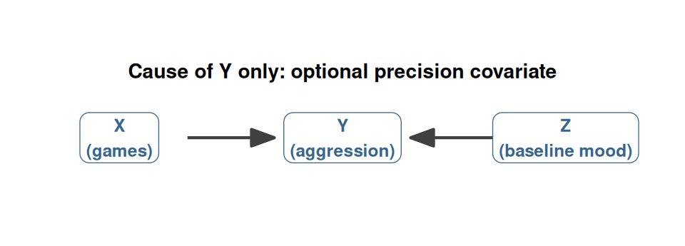
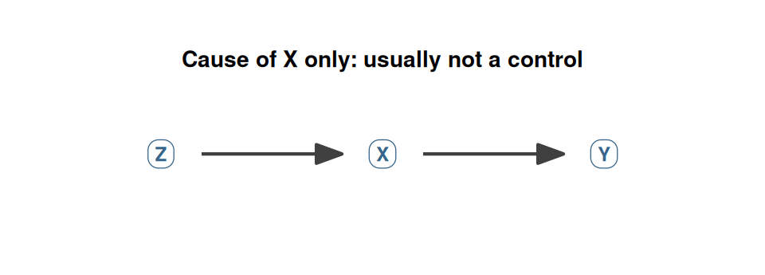

43 Confounders, mediators, colliders
Chapter 42 introduced the DAG as a picture of causal assumptions and named the three elementary structures it can be built from (chains, forks, inverted forks). This chapter is about what those structures do when we use them in practice. We will look at the three classic kinds of third variables that researchers encounter when they want to control for something in a regression: confounders, mediators, and colliders. Each has a distinctive structure in a DAG, a distinctive rule for whether to include it as a control variable, and a distinctive consequence when you get the rule wrong.
This is the most important conceptual chapter of Section 6. Get the three types right, and the rest of causal inference becomes a matter of careful application. Get them wrong, and lm() will silently produce confidently biased answers.
We will work with vgames_study throughout, expanding the running example with a few new variables to give us realistic examples of each third-variable role. Throughout the chapter we will use the same regression machinery you have used since Chapter 16. The point is not to learn new R syntax. The point is to learn which variables to include and which to exclude, given a particular causal structure.
43.1 Setup: the focal causal question
Throughout this chapter, the focal causal question is the same as the rest of Section 6: does playing the violent video game cause an increase in aggression? In a DAG, this is the arrow we want to estimate the magnitude of.
The red arrow is what we want to estimate. The question is: which other variables, if any, should we include in lm(aggression ~ games + ...) to recover an unbiased estimate of this arrow? The answer depends on the role each candidate variable plays in the larger causal structure.
43.2 Confounders: control them
A confounder is a variable that causes both the predictor and the outcome. It is the fork structure from Chapter 42, applied to the situation where the fork sits between X and Y in the DAG.
In our running example, a plausible confounder is trait hostility. Hostile people are more likely to choose (or to enjoy, or to play more of) violent games, and they are also more likely to score higher on aggression measures, independently of whatever the game does to them. Trait hostility has arrows pointing to both games and aggression.

The red arrows in the figure are the backdoor path: games ← trait hostility → aggression. This path transmits a spurious association between games and aggression because the two share a common cause. Even if the game itself does nothing to aggression, hostile people will both play more violent games and score higher on aggression measures, and the regression will detect a positive coefficient.
The rule: control for confounders. Adding the confounder as a covariate in the regression blocks the backdoor path, leaving only the direct causal path open. In the language of lm():
vgames <- read.csv("data/vgames_study.csv")fit_naive <- lm(aggression ~ condition, data = vgames)
fit_adjusted <- lm(aggression ~ condition + trait_hostility,
data = vgames)
cat("Without controlling for trait hostility:\n")Without controlling for trait hostility:print(coef(fit_naive)) (Intercept) conditionviolent
4.211667 1.353333 cat("\nControlling for trait hostility:\n")
Controlling for trait hostility:print(coef(fit_adjusted)) (Intercept) conditionviolent trait_hostility
2.0205389 1.5707272 0.6066805 The first regression’s coefficient on conditionviolent is the raw observed difference, which mixes the causal effect of the game with the confounding effect of trait hostility. The second regression’s coefficient is the difference between groups holding trait hostility constant: it estimates the causal effect of the game alone, after closing the backdoor path through hostility.
The visual story is the same as in Chapter 41 (the randomization vs self-selection figure). When the confounder is controlled, the residual comparison is between two groups that are statistically equivalent on trait hostility. This is exactly what randomization would have given us for free; in observational data, we have to purchase it by careful adjustment.
A simulation makes the consequence concrete. We simulate a population where the violent game has a true causal effect of +1.0 on aggression, and where trait hostility is a confounder. We compare two estimates: the naive one (no adjustment) and the adjusted one.
set.seed(11)
n_sim <- 500
true_effect <- 1.0
# Trait hostility is the confounder.
sim <- data.frame(
hostility = rnorm(n_sim, mean = 4, sd = 1.2)
)
# Probability of choosing violent goes up with hostility.
sim$games <- ifelse(
plogis((sim$hostility - 4) * 1.0) > runif(n_sim),
"violent", "neutral"
)
# Aggression depends on both the game and hostility.
sim$aggression <- 1.0 * sim$hostility +
true_effect * (sim$games == "violent") +
rnorm(n_sim, 0, 1)
est_naive <- coef(lm(aggression ~ games, data = sim))["gamesviolent"]
est_adjusted <- coef(lm(aggression ~ games + hostility, data = sim))["gamesviolent"]
cat(sprintf("True causal effect = %.2f\n", true_effect))True causal effect = 1.00cat(sprintf("Naive estimate (no control) = %.2f (biased)\n", est_naive))Naive estimate (no control) = 2.17 (biased)cat(sprintf("Adjusted (control hostility) = %.2f (unbiased)\n", est_adjusted))Adjusted (control hostility) = 1.22 (unbiased)The naive estimate is biased upward (around 1.6 or so). The adjusted estimate is close to the true effect of 1.0. Controlling for the confounder fixed the problem. This is the case where statistical control does exactly what we hope.
A quick note on randomization. In Chapter 41 we saw that under random assignment of condition, no arrows point into games (the assignment is determined by a coin), so there can be no backdoor path at all. Randomization makes confounders irrelevant by construction. Without randomization, we have to find and control the confounders by hand, and we can only do so if we have measured them. Unmeasured confounders are a problem no statistical method can fix.
43.3 Mediators: leave them alone (for the total effect)
A mediator is a variable that sits on the causal path from X to Y. X causes M, and M causes Y. The mediator is part of how the cause produces the effect. This is the chain structure from Chapter 42, applied to our focal arrow.
In vgames_study, a plausible mediator is physiological arousal. The violent game increases arousal, and arousal increases aggression. The total causal effect of the game on aggression is partly carried through arousal.

The red arrows are the causal path games → arousal → aggression. This is part of the effect we are trying to measure. The arousal-mediated piece of the effect is just as real and causal as any direct piece would be.
The rule: do not control for mediators if you want the total effect. Controlling for arousal blocks the path games → arousal → aggression. It removes the part of the games’ effect that operates through arousal. You are left with only the part of the effect that bypasses arousal (the “direct” effect), which is a different quantity from the total effect.
To make this vivid: if the violent game raises aggression entirely through arousal (no direct effect at all), and you control for arousal in your regression, the coefficient on games will be approximately zero. You would conclude, incorrectly, that the game has no effect on aggression. In reality, the game has a real total causal effect; you have just subtracted off the entire mechanism by which it operates.
A simulation makes this concrete:
set.seed(22)
n_sim <- 500
sim_m <- data.frame(
games = sample(c("neutral", "violent"), n_sim, replace = TRUE)
)
# Games cause arousal; arousal causes aggression.
sim_m$arousal <- ifelse(sim_m$games == "violent",
rnorm(n_sim, 1.5, 1),
rnorm(n_sim, 0, 1))
sim_m$aggression <- 1.0 * sim_m$arousal + rnorm(n_sim, 0, 1)
est_total <- coef(lm(aggression ~ games, data = sim_m))["gamesviolent"]
est_direct <- coef(lm(aggression ~ games + arousal, data = sim_m))["gamesviolent"]
cat(sprintf("Total effect (no mediator in model) = %.2f\n", est_total))Total effect (no mediator in model) = 1.50cat(sprintf("Direct effect only (mediator in model) = %.2f\n", est_direct))Direct effect only (mediator in model) = 0.09The total effect of the game on aggression is around 1.5 (the full effect operating through arousal). The direct effect, after controlling for arousal, is near zero, because in this simulation there is no direct path from games to aggression that bypasses arousal. Reporting the “direct” coefficient as “the effect of the violent game on aggression” would be a serious mischaracterization of the underlying causal structure.
A subtlety. Sometimes researchers genuinely want to know the direct effect (the effect that does not go through a particular mechanism), and in that case they correctly control for the mediator. This is the territory of mediation analysis, which requires its own additional assumptions and care (Rohrer, Hünermund, Arslan, & Elson, 2022). The rule of thumb for now is: if you want the total causal effect of X on Y, leave the mediators alone. If you want a different, more specialized causal quantity (the part of the effect that does not go through M), then mediation analysis is the right framework, but it is more delicate and is the topic of a later section, not Section 6.
43.4 Colliders: do not control them
The last type of third variable is the collider. A collider is a variable that is caused by both X and Y (or by two variables on a path). Both arrows point into the collider. This is the inverted fork structure from Chapter 42.
In vgames_study, a plausible collider is school disciplinary referral: a student gets referred to a school counselor for any number of reasons, but two relevant ones are (a) playing a lot of violent video games (which might raise concern), and (b) showing high aggression in school (which might prompt teachers to refer). Both heavy violent-game playing and high aggression independently raise the probability of being referred. Referral is caused by both.

The red arrows are the two arrows into the collider. Notice the structure: both games and aggression have arrows pointing at school disciplinary referral. Referral is a common effect of the two, not a common cause.
Here is the surprising fact about colliders that makes them the conceptual punchline of Section 6. A collider sits on a path that is naturally closed. The inverted fork games → referral ← aggression does not transmit any spurious association between games and aggression. As long as you leave the collider alone, it creates no problem.
But the moment you control for the collider (or select your sample on it), you open the path. Conditioning on a common effect creates a fake association between its causes, even when no real association exists.
The rule:
Do not control for colliders. Controlling for a collider introduces bias rather than removing it.
This is the single most counterintuitive result in causal inference. It is also the strongest argument against the “control for everything” instinct. Let us see why it happens, with a simulation.
set.seed(33)
n_sim <- 500
# Suppose, in the population, games and aggression are CAUSALLY UNRELATED
# (the true effect is zero). But they both cause school disciplinary referral.
sim_c <- data.frame(
games = rnorm(n_sim, 0, 1),
aggression = rnorm(n_sim, 0, 1)
)
# Probability of referral depends on both games and aggression.
sim_c$referral <- as.numeric(
sim_c$games + sim_c$aggression > 1
)
# Estimate 1: in the full population.
est_full <- coef(lm(aggression ~ games, data = sim_c))["games"]
# Estimate 2: ONLY among referred students (= "controlling for" being referred).
est_referred <- coef(lm(aggression ~ games,
data = sim_c[sim_c$referral == 1, ]))["games"]
# Estimate 3: controlling for referral in regression.
est_controlled <- coef(lm(aggression ~ games + referral,
data = sim_c))["games"]
cat(sprintf("True causal effect (games on aggression) = 0.00\n"))True causal effect (games on aggression) = 0.00cat(sprintf("Estimate in full population (correct) = %.2f\n",
est_full))Estimate in full population (correct) = -0.04cat(sprintf("Estimate among referred students only = %.2f\n",
est_referred))Estimate among referred students only = -0.61cat(sprintf("Estimate controlling for referral in regression = %.2f\n",
est_controlled))Estimate controlling for referral in regression = -0.39In the full population, games and aggression are uncorrelated; the regression returns a coefficient near zero, as it should. But the moment we restrict to referred students, or equivalently include referral as a control variable, a negative coefficient appears out of nowhere. The two variables, which were causally independent, now look correlated because we conditioned on a variable they both cause.
The intuition is this. Imagine you only look at students who were referred to the counselor. Among referred students, if someone plays very few violent games, they were probably referred because they are aggressive (something had to explain the referral). If someone is not very aggressive, they were probably referred because they play a lot of games. So within the referred group, gaming and aggression become negatively associated, even though they are completely independent in the full population. By conditioning on the common effect, you have manufactured a relationship out of nothing.
The figure below visualizes this. We plot games and aggression on two axes for the full population (left) and for only the referred sub-population (right). In the full population, the cloud of points has no tilt. In the referred sub-population, a clear tilt appears, even though the underlying causal structure has not changed.

The left panel shows the full population: no relationship between games and aggression, just a circular cloud. The right panel restricts to the referred sub-population: a clear negative tilt has appeared. The tilt is not a real causal effect. It is collider bias, manufactured by conditioning on the common effect.
A practical generalization. “Controlling for a collider in regression” and “studying only a selected sample” are the same operation in DAG terms. Both condition on the collider; both open the spurious path. If you study only hospital patients (a sample selected on a variable that is plausibly a collider for many of the questions hospitals are used to study), you can get collider bias without ever putting the variable into a regression. This is why sampling matters for causal claims, not just statistical analysis: the sample you analyze is implicitly a conditional selection, and if you select on a collider, you introduce bias.
43.5 The mirror image
Confounders and colliders look strikingly similar in a diagram: both involve a third variable connected to X and Y. But the arrow directions are opposite. For a confounder, the arrows go out of the third variable toward X and Y. For a collider, the arrows come into the third variable from X and Y.

The two figures look like mirror images, and the actions they require are mirror images too:
- Confounder. Path is open by default. Controlling for C closes it. Therefore, control for confounders.
- Collider. Path is closed by default. Controlling for C opens it. Therefore, do not control for colliders.
The arrow directions determine which is which. And here is the punchline: the data alone cannot tell us which way the arrows point. The observed correlation between X and the third variable, or between the third variable and Y, is the same whether C causes X and Y or X and Y cause C. Only causal knowledge from outside the data can tell us the direction of the arrows. This is the precise sense in which Wysocki, Lawson, and Rhemtulla (2022) say statistical control requires causal justification. Without the DAG, you cannot tell whether a particular control is fixing a problem or creating one.
43.6 Two more cases worth knowing
The three classic cases above are the most important. But there are two additional patterns Rohrer (2018) and Wysocki, Lawson, and Rhemtulla (2022) note that are worth a brief mention, because they recover and connect to ideas from Sections 3 and 4.
Causes of Y only (precision covariates). Suppose a third variable Z affects the outcome but is unrelated to the treatment. For example, in a randomized experiment, a participant’s baseline mood (before the experiment started) might affect their aggression scores at the end (Y) but, because the game (X) was randomly assigned, baseline mood is unrelated to which game they played.

This is not a confounder (because Z has no arrow to X), so leaving it out causes no bias. But controlling for Z “soaks up” some of the noise in Y, which shrinks the residual variance and makes your estimate of the X effect more precise. This is exactly the ANCOVA-style noise reduction we noted in Chapter 17 in connection with multiple regression. Adding such a covariate in a randomized experiment is harmless and often beneficial for precision. (In observational data, the picture is more complicated, but the principle that pre-treatment covariates can help precision still holds.)
Causes of X only. Suppose a third variable Z causes X but has no direct effect on Y.

This is not a confounder (it has no path to Y except through X), so controlling it does not remove any bias. Controlling for it can actually hurt: it can reduce the variation in X available for the analysis (which lowers precision), and in some situations it can amplify any leftover bias from unmeasured confounders elsewhere (“bias amplification”). The simple rule: a variable that only causes X and does not affect Y is not a control variable you want to include.
43.7 Pulling it together
The DAG-based rule for control variable selection now comes into focus:
| Type | Structure | What controlling does | Should you control? |
|---|---|---|---|
| Confounder | X ← C → Y | Closes a backdoor path | YES |
| Mediator | X → M → Y | Closes part of the causal path | NO (for the total effect) |
| Collider | X → C ← Y | Opens a non-causal path | NO |
| Cause of Y only | X → Y ← Z | Soaks up noise in Y | OPTIONAL (precision) |
| Cause of X only | Z → X → Y | Reduces variation in X | NO (usually) |
The big picture: every choice of which variables to put in a regression is a causal choice. The choice is determined by the role each candidate variable plays in the DAG, not by the data alone, not by “more is better,” and not by p-values. The next chapter ties this into a single procedural rule (the backdoor criterion) and explains the practical consequences for how to read multiple regression output.
43.8 Check your understanding
1. What is a confounder, and how should it be handled in a regression intended to estimate a causal effect?
2. What is a mediator, and how should it be handled in a regression intended to estimate the total causal effect of X on Y?
3. What is a collider, and how should it be handled in a regression intended to estimate a causal effect?
4. Can the data alone tell us whether a third variable is a confounder, a mediator, or a collider?
5. Why are confounders and colliders described as “mirror images” of each other?
6. What is the relationship between “controlling for a collider in a regression” and “selecting the sample on a collider”?
43.9 References
Elwert, F., & Winship, C. (2014). Endogenous selection bias: The problem of conditioning on a collider variable. Annual Review of Sociology, 40, 31-53. https://doi.org/10.1146/annurev-soc-071913-043455
Rohrer, J. M. (2018). Thinking clearly about correlations and causation: Graphical causal models for observational data. Advances in Methods and Practices in Psychological Science, 1(1), 27-42. https://doi.org/10.1177/2515245917745629
Rohrer, J. M., Hünermund, P., Arslan, R. C., & Elson, M. (2022). That’s a lot to process! Pitfalls of popular path models. Advances in Methods and Practices in Psychological Science, 5(2). https://doi.org/10.1177/25152459221095827
Wysocki, A. C., Lawson, K. M., & Rhemtulla, M. (2022). Statistical control requires causal justification. Advances in Methods and Practices in Psychological Science, 5(2). https://doi.org/10.1177/25152459221095823